What can a generative model recover about a person's immune cells without paired samples?
Predicting between PBMC single-cell (pseudobulk) and whole-blood transcriptomes.
Many large cohorts have only whole-blood bulk RNA-seq. Predicting single-cell profiles from bulk could bring single-cell information to those cohorts. In the Allen Institute for Immunology's Sound Life cohort, 96 healthy adults had each blood draw profiled both ways: single-cell RNA-seq of blood immune cells (PBMCs) and whole-blood bulk RNA-seq (Gong et al., 2025). Because most cohorts have only one assay, a generative model (a CycleGAN) was trained as if the two assays came from different people, and the paired samples were used only to score it.
Result: The CycleGAN learned little information beyond a simple gene-by-gene correction. Its predictions mostly reflected each person's usual immune profile, and only some of what changed between blood draws. A plain linear model (ridge regression) trained on paired samples from 68 donors did better, though accuracy stayed low: centered R² 0.16 when predicting bulk and 0.24 when predicting single-cell profiles, where 0 means no better than predicting the average profile and 1 is perfect. No unpaired method got above 0. For a bulk-only cohort, adding single-cell data from the same blood draws for some donors helped more than any unpaired model tested.
Final project (solo) for COMP 690-204: Deep Generative Models, UNC Chapel Hill, Fall 2026
Code, notebooks, and results: the project repository
On this page
Results at a glance
The short answers, each linked to the finding that explains it.
test results come from held-out donors, scored once.
validation results come from donors held out of training but used to tune the models.
Every test interval and reading is in All test results (Figure 17).
Machine-learning questions test
- Can a model trained without pairs beat simple methods?AB
No. It was no more realistic than simple alignments, or blends of two of them, at equal accuracy, and a random real profile that ignores the input also scored as realistic, so realism alone cannot validate a model trained without pairs. Finding 1 - Do composition labels from paired data help?
Partly. They brought composition back to about the per-gene correction's level. Finding 2 - What do pairs add?C
Accuracy. Plain ridge regression on 8 paired donors (exploratory) was already more accurate than every CycleGAN variant, and on all 68 it scored above the average profile (point estimates). Finding 3
Biological readouts validation
- The personDo the predictions carry who the donor is?D
Yes, mostly through stable differences between donors, such as NK-cell abundance or CMV status, that the per-gene correction already carries. Finding 4 - The personDo predictions keep specific traits of the person?
The direction of the sex difference, yes, but only paired ridge regression came close on its size. Finding 5 - The assayCan predictions generate cells their input lacks? test validationE
Barely. Predicted whole blood recovered little neutrophil variation beyond each donor's usual level, and only paired ridge regression clearly tracked it. Finding 6 - The drawDo predictions capture a change at a single blood draw?F
Only partly. The vaccine plasmablast rise came through loosely for every method, so predicted profiles are not a reliable stand-in for measured ones in studies of single visits. Finding 7
Key numbers (cards A–F)
The question
Whole-blood bulk RNA-seq is cheap and is the only transcriptome in many large clinical and biobank cohorts, while single-cell RNA-seq of PBMCs resolves immune cell types but is costly. A reliable mapping from one to the other, which we call cross-assay prediction, would let bulk-only cohorts gain single-cell resolution, so they could study how immune cell types change with disease, age, and treatment. Deconvolution estimates cell-type fractions, and some methods also cell-type expression, from bulk (Newman et al., 2019; Chu et al., 2022), and Bulk2Space maps bulk to single-cell resolution with a reference (Liao et al., 2022).
Most cohorts have only one assay, so the mapping would have to be learned without paired samples, as GANs (Amodio and Krishnaswamy, 2018) and optimal transport (Demetci et al., 2022) have done for other biological measurements. A CycleGAN (Zhu et al., 2017) learns to produce outputs that pass as real profiles of the other assay, and its cycle-consistency constraint, mapping a profile across and back, is meant to keep each output tied to its input.
We frame a blood transcriptome as a mix of three kinds of signal, each of which a prediction has to carry across assays:
- The person: what stays the same for a donor from visit to visit. This includes a stable mix of immune cells, cytomegalovirus (CMV) status, which lastingly changes NK and T cells (Gumá et al., 2004), sex, and HLA gene expression.
- The draw: what changes from one visit to the next, such as the plasmablast surge a week after flu vaccination (Wrammert et al., 2008; Nakaya et al., 2011).
- The assay: what one assay measures and the other does not. Whole blood keeps the neutrophils and most other granulocytes that PBMC isolation removes, so a prediction of whole blood must add signal its input lacks. A prediction from whole blood must recover the PBMC composition that granulocyte signal obscures.
We trained a CycleGAN without any pairs and asked which of these it carries, and what adversarial training adds to the per-gene correction the CycleGAN builds on.
The data come from 96 healthy adults in the Allen Institute for Immunology's Sound Life cohort, each with several blood draws over about two years, and every draw was profiled by PBMC single-cell RNA-seq and by whole-blood bulk RNA-seq. Each sample's single-cell data are summed into one pseudobulk profile over the same 5,000 genes as the bulk.
The test setup
The unpaired CycleGAN trains on single-cell profiles from one group of donors and bulk profiles from a different group, so no blood sample appears in both assays during its training (Figure 1). Its predictions are then compared with simple alignments and with models that use pairs, ordered by how much paired data each one gets.
Tap any figure to enlarge it.
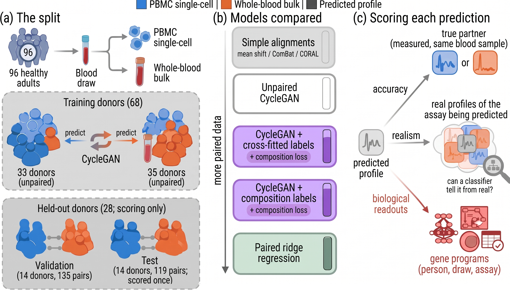
Where the 96 donors go
| Donor group | Donors | Blood draws | Used for |
|---|---|---|---|
| Training, single-cell group | 33 | 288 | Single-cell profiles for the CycleGAN |
| Training, bulk group | 35 | 294 | Bulk profiles for the CycleGAN |
| Training, all | 68 | 582 | Matched pairs for the models that use pairs |
| Validation | 14 | 135 | Choosing settings and checkpoints, and the biological readouts |
| Test | 14 | 119 | Scored once: the machine-learning questions |
| Total | 96 | 836 |
Checking the three signals
Before testing any model, we checked that each signal is present in the measured profiles. Donors kept a consistent immune makeup across visits, the plasmablast program rose seven days after flu vaccination, and granulocyte genes were several log units higher in whole blood than in PBMC pseudobulk.
The evidence for each signal (Figures 2 and 3)
The person. Only – of the variance of T, B, NK, monocyte, and dendritic-cell fractions lies within a donor, and gene programs in bulk and in single-cell profiles are person-level, varying more between donors than within one donor.
The draw. Seven days after flu vaccination, the plasmablast and immunoglobulin program rises by about 0.5 standard deviations in bulk and 0.4 in single-cell profiles, across 116 vaccinations in the training donors. Signal specific to one draw is small overall, though: a sample's bulk profile is only slightly more similar to its own single-cell partner than to the same donor's other draws (Figure 2).
The assay. Granulocyte genes are several log units higher in whole blood and nearly absent from PBMC pseudobulk (Figure 3). Whole blood also makes PBMC composition harder to read: cell-type fractions read from 28 marker genes matched the fractions counted from the cells with composition R² from real single-cell profiles but only from real bulk (test).
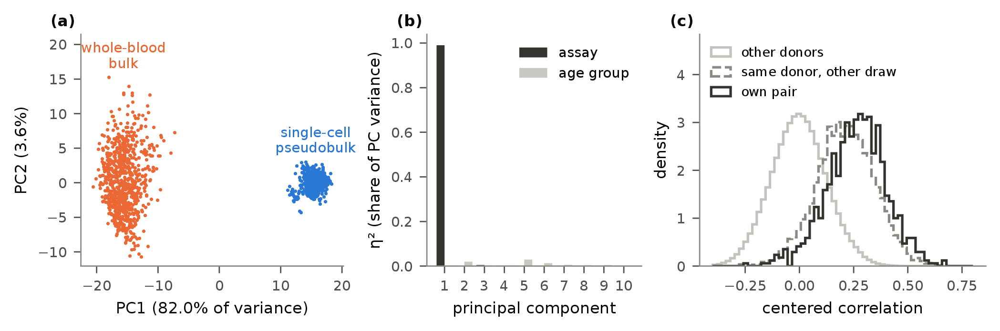
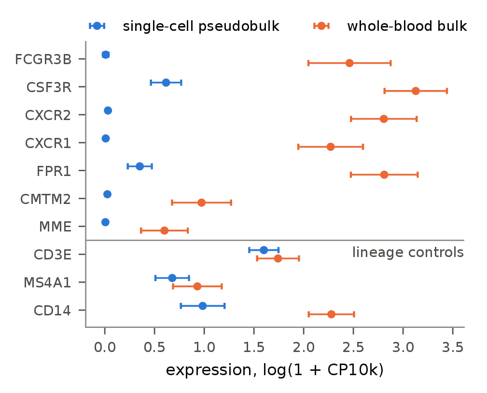
How realism is judged
Accuracy and realism trade off against each other. A random real profile passes as real but has nothing to do with its sample, while a per-gene correction such as mean shift or ComBat stays close to its input but is easily told from real profiles. A model trained without pairs can trade one for the other without learning which output belongs to which input, so a model improves on simple methods only if no blend of them is at least as accurate and at least as realistic. The upper edge of what such blends reach is the unpaired accuracy–realism frontier (Figure 4).
The simple alignments, and where they land on our data
The three alignments build on each other: each makes the input match one more property of the assay being predicted, from each gene's average, to its spread, to the correlations between genes. All are fit on the same unpaired training data as the CycleGAN.
- Mean shift adds each gene's average difference between the two assays to the input. The CycleGAN builds on it when predicting bulk.
- ComBat (Johnson et al., 2007) also matches each gene's spread, with empirical-Bayes shrinkage, which pulls adjustments for noisy genes toward the average across genes. It is a widely used batch correction in genomics. The CycleGAN builds on it when predicting single-cell.
- CORAL (Sun et al., 2016) also matches the correlations between genes. It is a standard unpaired domain-adaptation method in machine learning.
- The training mean ignores the input and predicts the same profile for every sample: the average profile of the assay being predicted, over the training data. Every prediction is identical, so its realism is 0, but it is the most accurate simple method when predicting either assay, because centered R² rewards staying near the average. It is in the set so that pulling predictions toward the average cannot pass the frontier.
| Method | Single-cell → bulk | Bulk → single-cell | ||
|---|---|---|---|---|
| Accuracy | Realism | Accuracy | Realism | |
| Mean shift | −0.08 | 0.03 | −2.04 | 0.41 |
| ComBat | −0.47 | 0.26 | −0.11 | 0.04 |
| CORAL | −0.70 | 0.54 | −1.24 | 0.34 |
| Training mean | −0.06 | 0.00 | −0.04 | 0.00 |
| Random real profile | −1.01 | 0.63 | −0.87 | 0.88 |
Test donors. Realism is 1 when a classifier cannot tell the predictions from real profiles. The random real profile is not one of the blended methods.
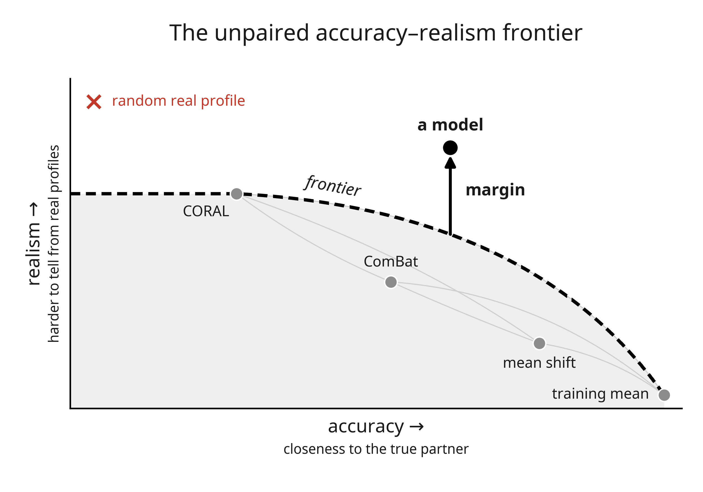
How the frontier is computed
- Score each simple alignment. Mean shift, ComBat, CORAL, and the training mean predicted every test sample. Each method was scored for accuracy and realism, giving one point per method.
- Blend every pair. For methods A and B and weights w = 0, 0.1, …, 1, each sample's prediction is w × A + (1 − w) × B, scored like any method. A blend's realism is measured, not averaged from A and B, so a blend can be more realistic than either of its methods and the frontier can lie above every single alignment, as in Figure 5b. Six pairs and 11 weights give six curves.
- Take the upper edge. At each accuracy, the frontier is the highest realism reached by any blend at that accuracy or better.
- Measure the margin. A model's margin is its realism minus the frontier's realism at the model's accuracy. If the model is more accurate than every blend, the margin is its accuracy lead instead.
The frontier was computed once for each direction. For the confidence intervals, the whole construction was repeated on each of 1,000 resamples of the test donors.
Caveat. A random real profile also passes the frontier, so the findings also check each prediction against its true partner.
Why this comparator: precedents and known biases
- Passing is not information. A random real profile lands at or above the frontier when predicting either assay, and another real draw of the same donor lands far above it when predicting single-cell profiles (margin 0.79).
- Biased both ways. The frontier is a maximum over many noisy blends, which favors the simple methods, and the CycleGAN's settings were chosen on validation with this same margin, which favors the CycleGAN.
- Why not beat each simple method separately? No unpaired method can be both as accurate as the most accurate alignment and as realistic as the most realistic one, so that test fails every trade-off and cannot tell a useful model from a useless one.
- Precedents.
- The perception–distortion trade-off (Blau and Michaeli, 2018) compares methods on the same two-axis plane: accuracy against a reference, and how well outputs can be told from real samples.
- The ROC convex hull (Provost and Fawcett, 2001) asks whether a new classifier beats what combining existing ones already achieves.
- Single-cell integration benchmarks (Luecken et al., 2022) score methods on two competing axes, batch removal and conservation of biology.
- What is new in this project is a comparator that uses no pairs and compares methods at equal accuracy. The frontier is one reasonable comparator, not an established standard.
- The model is never blended: blending the model with the training mean could only raise its margin, so leaving that out is conservative.
- Approximations: blends are scored at 11 weights and joined by straight lines in between, and other unpaired methods could raise the frontier.
- Realism's scope: realism partly detects differences between donors, so real profiles from other donors do not score 1.
What the predictions carry
The machine-learning findings use the test donors. The biological readouts use the validation donors, whose data also chose the CycleGANs' settings and checkpoints. That is likely to favor the CycleGANs, so the conclusion that they add little beyond the per-gene correction is, if anything, conservative.
Why a small change from the per-gene correction is partly expected
Each CycleGAN starts at the per-gene correction, the most accurate simple alignment in its direction, so training starts where accuracy is best and has to add realism on top of that correction. Blends of alignments were used only to judge the CycleGAN, not as starting points. Because the cycle loss also keeps each CycleGAN near that start, a small change from the correction is partly expected by design. Optimal-transport retrieval, which has no such start, passed the frontier only by giving up accuracy, as a random real profile does (Figure 5), and a CycleGAN trained without the per-gene start was not run.
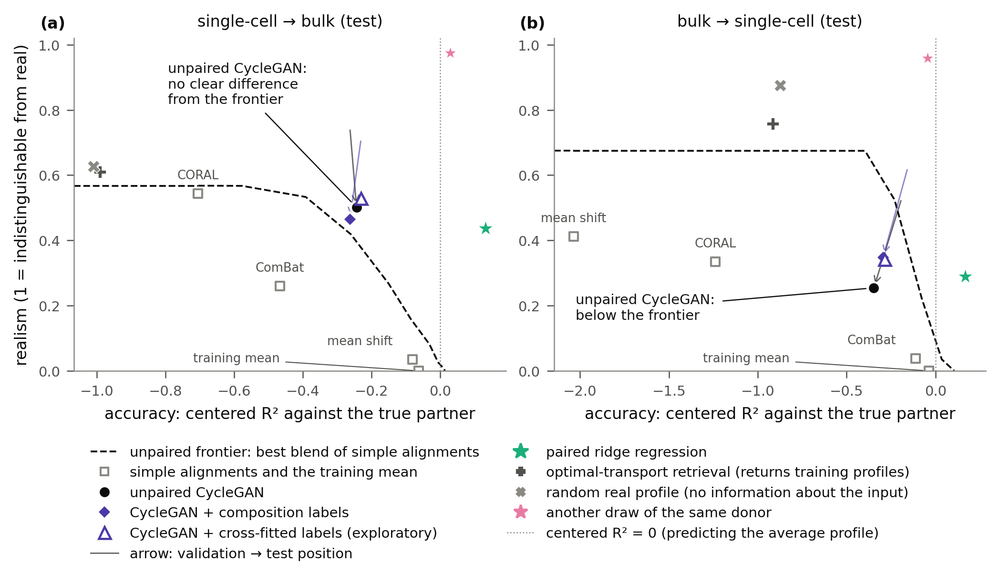
Machine-learning questions test
1. Looking real vs. carrying information test
The CycleGAN looked no more real than simple alignments of equal accuracy.
At equal accuracy, is the unpaired CycleGAN more realistic than the best blend of simple alignments?
- Single-cell → bulk. The CycleGAN was no more realistic than blends of simple alignments at the same accuracy (margin , 95% CI to ; Figure 5). For scale, realism differences between two models of up to about 0.2 can arise by chance (Checks on the pipeline).
- Bulk → single-cell. The CycleGAN was less realistic than blends at the same accuracy, a borderline result (margin , 95% CI to ).
- Finding its own sample. In single-cell → bulk, the CycleGAN picked out its own sample among the donor's draws clearly less often than the per-gene correction did (difference , 95% CI to ; Figure 7d).
Two unpaired collections never say which profile belongs to which sample, so the CycleGAN learns what profiles of the other assay look like as a group, and mostly not which output belongs to which input (Figure 6). Looking real alone is not evidence that a prediction carries information about its sample.
What the predictions look like validation

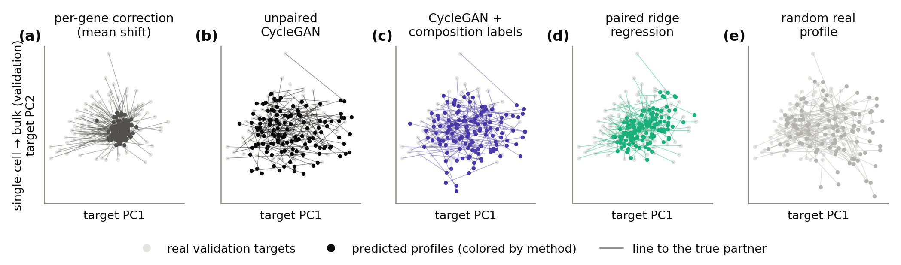
2. Cell-type composition test validation
Composition labels brought composition back to about the per-gene correction's level.
Do composition labels, added as a loss on the CycleGAN, restore each sample's cell-type fractions?
- Adversarial training lost T cells and NK cells validation when predicting either assay, and every major cell type in bulk → single-cell. In single-cell → bulk, T-cell composition R² fell from for the per-gene correction to for the CycleGAN with weights averaged over training.
- Composition labels brought most of them back. validation T cells, B cells, and monocytes returned to about the correction's level or above, and NK cells only in single-cell → bulk.
- On test, the labels clearly raised composition R², to about the per-gene correction's level. test The gain was in single-cell → bulk and in bulk → single-cell, both with 95% CIs above 0, reaching 0.59 against mean shift's 0.50 and 0.43 against ComBat's 0.48 (Figure 7).
- Labels from networks that never saw the sample's donor test gave about the same gain (exploratory).
- Dendritic cells were poorly recovered by every model. validation They are rare, about 1.3% of PBMCs, roughly 40 of 3,000 cells per sample.
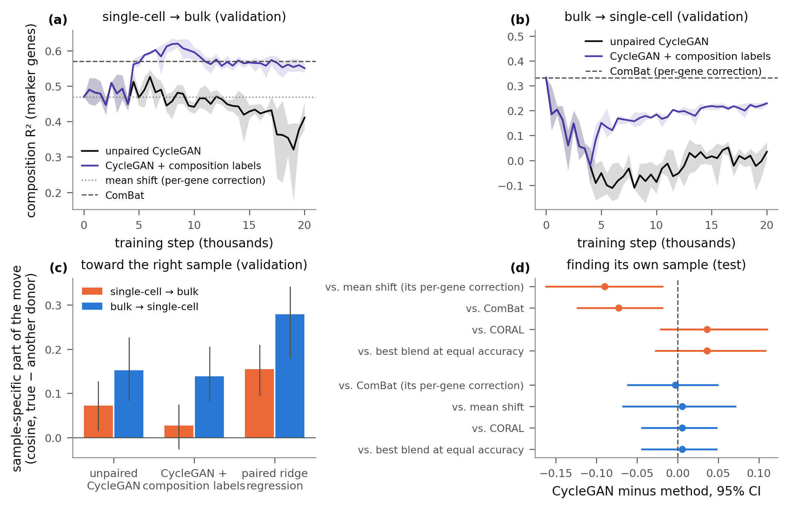
Other readouts of the gain
- The readout is imperfect on bulk. The marker-gene readout reached composition R² on real bulk profiles, so predictions of bulk can score above that reference.
- The gain holds under other readouts. On test, composition labels raised composition R² by 0.26 and 0.17 under a ridge readout and by 0.33 and 0.18 under the composition networks, against 0.17 and 0.14 under the marker-gene readout.
- The generator partly fits its own label networks. On validation, the labels closed a median 47% and 40% of the gap to the true composition as read by the networks the CycleGAN trained against, but only 22% and 25% as read by the marker-gene readout.
3. What pairs add test
Pairs added accuracy: 8 paired donors roughly matched the average profile, and all 68 scored above it.
How do models trained on paired donors compare with the CycleGAN, and how many paired donors does that take?
- Accuracy grows with the number of paired donors. Plain ridge regression (without the spread step), trained on 8 paired donors, reached centered R² near 0 when predicting either assay, above every CycleGAN variant (Figure 8). Trained on all 68, it reached 0.16 when predicting bulk and 0.24 when predicting single-cell profiles. These gains can come from the donor's usual profile as well as from the specific draw.
- Realism. With all 68 donors paired, ridge regression with the spread step showed no clear difference in realism from the CycleGANs, and plain ridge regression at 8 donors was much less realistic (Figure 8).
- A calibrated paired model can match on both axes. Ridge regression on all 68 donors, recalibrated along the principal components of the assay being predicted, was more accurate than every CycleGAN variant and about as realistic when predicting bulk (0.51 against at most 0.56 for the locked variants). These are point estimates, and no comparison with them was planned.
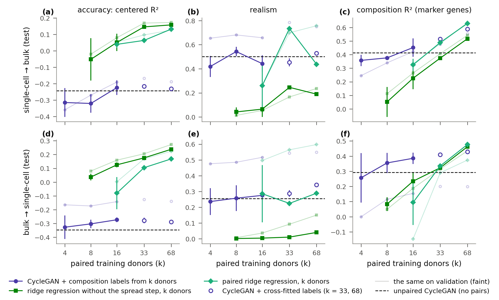
Biological readouts validation
The person4. Who the donor is validation
Predictions carried who the donor is, mostly through the per-gene correction.
Do predicted program scores track the true scores, and does adversarial training improve on the per-gene correction?
We scored 13 gene programs: markers for five immune cell types (T, B, NK, monocyte, and dendritic cells) and for platelets, erythroid (hemoglobin) cells, and granulocytes, plus programs for the interferon response, plasmablasts and immunoglobulin (Ig, the antibody genes), CMV-associated cytotoxicity, and one program of sex and HLA genes, with ribosomal-protein genes, whose measured levels depend more on assay chemistry than on biology, as an assay-artifact control. The granulocyte program exists only in whole blood, so single-cell profiles have 12.
- Tracking and accuracy measure different things. A program score's correlation ignores errors of scale and offset that centered R² penalizes, so the per-gene correction can track who the donor is while scoring below the average profile in accuracy.
- The per-gene correction already tracked most programs, in single-cell → bulk and in bulk → single-cell, mostly through donors' baselines rather than visit deviations (Figures 9 and 10).
- The CycleGAN mostly matched the correction. On programs in single-cell → bulk and in bulk → single-cell, the per-gene correction tracked the program and the CycleGAN showed no clear difference from it.
- Adversarial training did not help when predicting bulk. The CycleGAN fell below the correction on three programs and rose above it on none of the tracked ones. It added somewhat more when predicting single-cell profiles (below).
- Visit-to-visit changes came through for interferon. The per-gene correction followed each donor's interferon deviations from visit to visit (visit-deviation r in single-cell → bulk), and the CycleGAN weakened this when predicting bulk (below).
- What training changed carried little about the sample. Across genes, the CycleGAN's change from the per-gene correction was only weakly related to the true partner (median partial correlation in single-cell → bulk and in bulk → single-cell), against and for paired ridge regression's change.
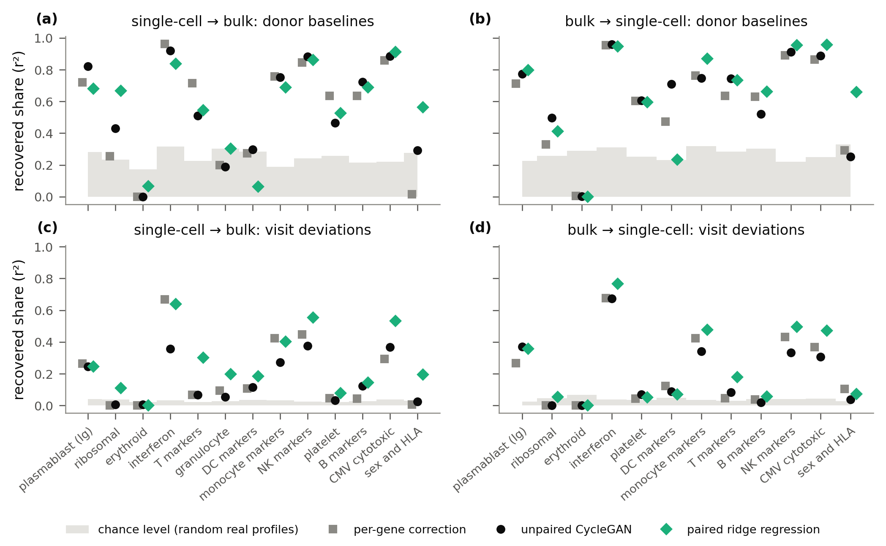
Programs where the CycleGAN differed from the per-gene correction
Exploratory, and not corrected for multiple comparisons.
- Hallmark gene sets. On 49 broader Hallmark sets (Liberzon et al., 2015), the CycleGAN's point correlation was above the chance level on more sets than the per-gene correction's when predicting single-cell profiles (28 against 17), and on about as many when predicting bulk (21 against 20).
- Below the correction, in single-cell → bulk (Figure 11). Interferon response (Δr , 95% CI ), platelets (, ), and monocyte markers (, ).
- Above the correction, in bulk → single-cell. Plasmablasts (, ) and T-cell markers (, ). Correlation ignores level and scale, so the T-cell gain does not conflict with the CycleGAN's lower T-cell composition (Finding 2).
- The assay-artifact control moved. In single-cell → bulk, the CycleGAN rose above the correction on the ribosomal program (, ) and the erythroid program (, ), though neither was tracked.
- CORAL comparison. The CycleGAN's partial correlation minus CORAL's was () in single-cell → bulk and () in bulk → single-cell, so the CycleGAN's change carried no more than this second unpaired alignment's, and less when predicting single-cell profiles.

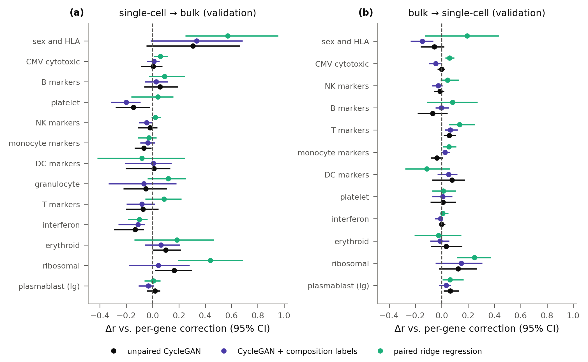
The person5. Specific traits validation
Predictions kept the direction of the sex difference, but only paired ridge regression came close on its size.
Do predictions keep the sex difference in XIST, in direction and size, and donors' HLA levels?
- Sex. Every method kept the direction of the female − male difference in XIST expression, a gene expressed only from the inactive X chromosome, so only in females (Brown et al., 1991). Paired ridge regression got its size right in single-cell → bulk (a ratio of predicted to true difference near 1) and came closest in bulk → single-cell.
Predicted ÷ true XIST difference Single-cell → bulk Bulk → single-cell Per-gene correction Unpaired CycleGAN Paired ridge regression - HLA. Most methods appeared to keep donors' HLA gene expression, the per-gene correction included (baseline r to , against a chance level of about 0.5 to 0.6 for the sex and HLA program). HLA levels partly reflect which alleles a donor carries, since reads from some alleles map poorly to the reference genome.
- CMV. Every method tracked the CMV-associated program from donor to donor, one of the 13 in Finding 4, but with only 14 donors (8 CMV-positive, 6 CMV-negative) the group difference was too uncertain to judge.
Sex separation and HLA
- In single-cell → bulk, mean shift carried the single-cell difference over unscaled, which overshoots in bulk units.
- In bulk → single-cell, the CycleGANs separated the sexes less cleanly. Their donor-level AUROC, where 1 means each donor's predicted XIST separates females from males perfectly, was –, against 1.00 for the per-gene correction and paired ridge regression.
- No intervals were computed for the HLA correlations.
The assay6. Cells the input lacks test validation
Predicted whole blood barely carried the neutrophil signal that the input lacks.
Do predicted whole-blood profiles track the true granulocyte program, which the PBMC input lacks, and the erythroid (hemoglobin) program?
- The neutrophil level is largely a trait of the person. test Another visit of the same donor matched a sample's true level more closely than the CycleGAN did (r , against ).
- Only paired ridge regression was clearly above the chance level validation with r (95% CI ) against a chance level of . Neither mean shift nor the CycleGAN reached that level (Figure 12).
- Nothing tracked the erythroid (hemoglobin) program validation when predicting either assay.
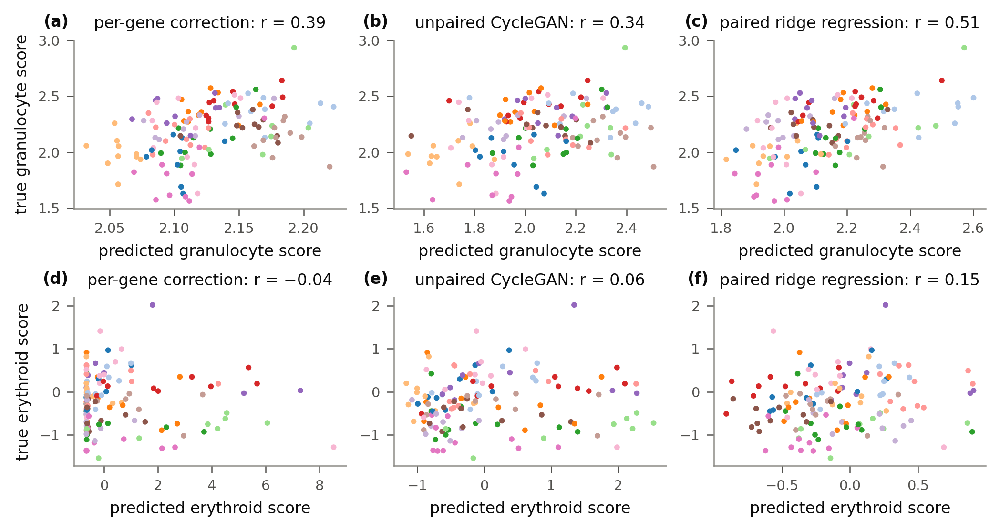
Other correlations, and reading composition from whole blood
- Other correlations. On test, mean shift reached , paired ridge regression , and a random real profile , as point estimates. On validation, the CycleGAN () fell slightly below mean shift (), and paired ridge regression's gain over mean shift was not clearly different from 0 (Δr , 95% CI ).
- A plain deconvolution read whole blood with a bias. Reference deconvolution (Abbas et al., 2009; Newman et al., 2015) with signatures from labeled single cells ranked samples moderately well (correlation – across T, B, NK cells, and monocytes) but miscalibrated them, under-reading T cells by about percentage points and over-reading monocytes by about . Neutrophil genes shared with monocytes remain in whole blood, which likely explains the monocyte excess. Calibrating the readout to the training average raised its R² from −1.08 and −1.55 to 0.23 and 0.05 on the two halves of the training donors, which is still low. This check used training donors and read real bulk profiles directly, without any prediction.
The draw7. A response to vaccination validation
Predictions followed the vaccine response only partly.
Do predictions follow each donor's plasmablast rise from Day 0 to Day 7 after flu vaccination?
- The rise is clearly present in the true profiles, about standard deviations in bulk and in single-cell profiles, across 26 vaccinations from 14 donors.
- Predicted and true rises correlated loosely. The per-gene correction, the CycleGAN, and paired ridge regression all reached r – (Figure 13).
- Among the three main methods, only paired ridge regression was clearly above the chance level, in bulk → single-cell only, with r (95% CI ) against a chance level of .
- Interferon varies from visit to visit (Finding 4) but cannot be judged at Day 7. Its true score did not rise by Day 7, as expected for a response that peaks within a day of vaccination (Obermoser et al., 2013).
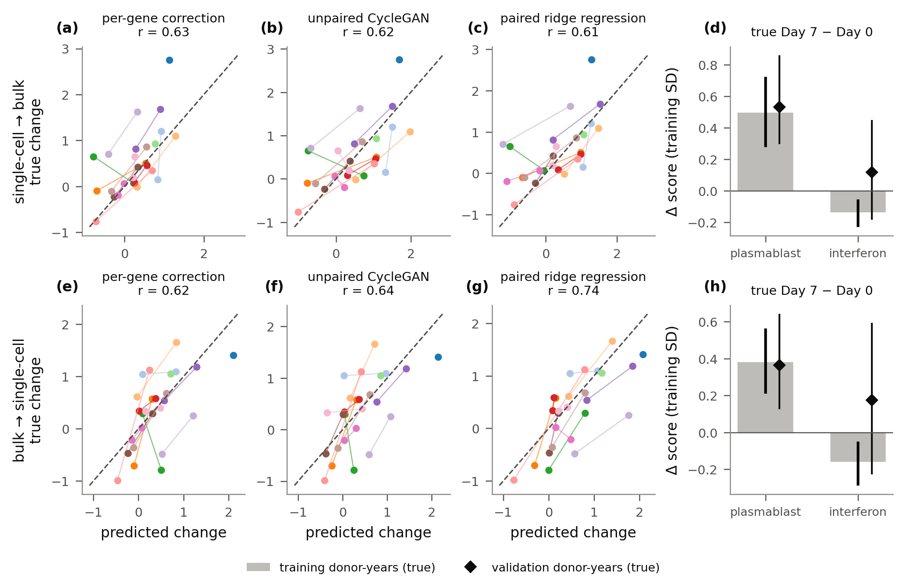
Intervals and close calls
The true rise had a 95% CI of in bulk and in single-cell profiles. Two calls sat near the chance level: the CycleGAN with weights averaged over training was just above it in bulk → single-cell, and paired ridge regression just below it in single-cell → bulk.
What this means
Machine-learning questions test
Biological readouts validation
Limitations
Pseudobulk, not single cells
Each sample's cells were summed into one profile, so nothing was predicted or tested at the level of single cells or rare cell states.
Few donors, one healthy cohort
Only test donors, all healthy adults aged 25 to 67 from one cohort, so many comparisons end in no clear difference and verdicts near the edge of their interval are borderline.
Biology measured on validation donors
The biological readouts are exploratory and used the validation donors that tuned the CycleGANs, which likely favors them.
Realism is a partial test
Realism is a classifier test on the top 10 principal components, and a random real profile with no information passes it, so a margin alone cannot show that a prediction carries information.
More limitations
- Small-sample statistics. With 14 donors, intervals from resampling donors can be too narrow, such as the upper end of for the CycleGAN being less realistic when predicting single-cell profiles. Program-level results are not corrected for multiple comparisons.
- Other populations and protocols. Disease, other ages, and other protocols, which the motivating bulk-only cohorts include, were not tested.
- The two assays measure different cells. Whole-blood granulocytes are missing from every single-cell input, which limits how accurate any prediction of bulk can be.
- Composition labels need paired data. The label networks are trained on pairs, so the composition-label variants are not strictly unpaired. The cross-fitted variant limits leakage but still uses other donors' pairs.
- One model family and a small search. Only the CycleGAN was tested, with 12 settings × 3 seeds (9 × 3 with composition labels) at one network size.
- The 5,000-gene panel. The panel holds the most variable genes in the training donors. Genes outside it were neither predicted nor scored.
- One vaccine contrast. Only flu vaccination, Day 0 against Day 7, was tested as a visit-level event, on 26 donor-years from 14 donors.
- Program scores are linear summaries. A score averages marker genes, so a program can follow composition rather than expression within cells.
- Validation realism was optimistic. From validation to test, the CycleGAN's realism fell (Figure 5, with the validation positions in Figure 14).
- Cross-fitted labels are exploratory. Their design used validation results, and they have no check on a second split of the training donors.
Next steps
Can a prediction carry cells, not just their sum?
Predicting cells, not pseudobulk
Generate a set of cells for each sample, so a prediction from bulk carries cell states and composition directly.
Is the limit the CycleGAN or the unpaired setting?
Other generative families, judged the same way
Test diffusion (Ho et al., 2020), flow matching (Lipman et al., 2023), and Schrödinger bridges (De Bortoli et al., 2021) with the same training data, budget, and comparator. If none passes, the limit is more likely the unpaired setting than the CycleGAN.
Can predictions support studies of single visits?
More paired donors and a second cohort
Add donors profiled by both assays, and a second cohort with visit-level phenotypes or perturbations of known timing.
Is the missing signal a mixing problem?
Model whole blood as a mixture
Model whole blood as its PBMC profile plus a sample-specific granulocyte fraction, which may explain why every per-gene method scores below the average profile and gives a deconvolution comparator next to BayesPrism (Chu et al., 2022) and CIBERSORTx (Newman et al., 2019).
Further analyses
- A synthetic mixing benchmark. Bulk profiles simulated by mixing single-cell profiles of known cell types in set proportions, so the right prediction for every sample is known. If unpaired models fail on these data, two unpaired collections alone do not determine the mapping. The CycleGAN already recovered simpler simulated mappings (Checks on the pipeline).
- Interval checks for few donors. Bias-corrected bootstrap or leave-one-donor-out intervals for the validation verdicts near the edge of their intervals. The test verdicts cannot be rechecked without scoring the test split again.
- A second, planned test scoring. Score the biological readouts on the test split under a fixed plan, and add an interval for the random real profile's margin, which was reported as a point estimate.
- Trait intervals. Confidence intervals and per-split counts of female and male donors for the XIST ratios.
- Realism beyond 10 principal components. A two-sample test on all genes, such as a kernel test, so that realism does not depend on the main axes of variation alone.
- Reusable preprocessing. The preprocessing steps as tested functions in an installable package, with the tests run automatically on every change.
Development
The machine-learning questions and the rules for judging their answers were fixed before training (analysis plan), with one dated change after a pilot on validation data. Every deviation from the plan is logged in a change log. Model results below were measured on the validation donors that also chose the models, unless marked test. Preprocessing used every donor, and the known-answer checks used simulated data.
Preprocessing3,000 cells and one pseudobulk per sample, 5,000 genes chosen on training donors only
- Cells. The provider's single-cell files were reduced to "slim" files of a uniform random 3,000 cells per sample, drawn before any filtering, and every later step used the slims. Cells were kept with at least 200 genes detected and under 20% mitochondrial counts, and a sample needed at least 500 kept cells. Every cell passed, because the provider had already filtered its files.
- Pseudobulk. Each single-cell sample was summed over all its kept cells into one profile (median 3,000 cells, minimum 984).
- Bulk. Two kits sequenced twice had their libraries summed, and libraries under 1 million counts were dropped.
- Gene names. Gene symbols that the provider had made unique with suffixes such as "-1" were merged back into one gene when the base symbol is a real gene.
- Normalization. Both assays were normalized as log(1 + counts per 10,000), with each library size taken over the genes measured in both assays.
- Pairs. 868 single-cell samples and 836 bulk kits gave 836 pairs from 96 donors.
- Gene panel. Of the 32,965 genes measured in both assays, the 13,775 detected in at least half of the training samples in both assays were ranked by variability within each assay, and the 5,000 with the best average rank form the panel. The panel used training donors only, and it stayed the same when the validation and test donors' data were scrambled. Canonical T-cell markers such as CD3E, CD3D, and TRAC fell outside the panel.
- Splits. Within each age group, donors were divided at random into training (68 donors), validation (14), and test (14), so all of a donor's draws stay in one split and both age groups appear in every split. For unpaired training, the training donors were divided again into two halves matched in age mix and number of draws, one giving only single-cell profiles and the other only bulk profiles.
The locked models against the frontierOn validation, the CycleGAN sat on the frontier, not beyond it
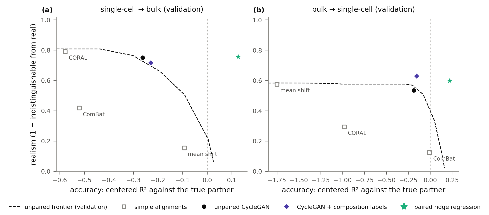
Ablations: what each component doesThe discriminator added realism, and accuracy collapsed without the cycle loss
- The discriminator is what adds realism. Without the adversarial loss, realism stayed near 0.1 when predicting either assay, the level of the per-gene corrections the generators build on (Figure 15).
- The cycle and identity losses alone still moved the generators. Without the adversarial loss, the generators moved away from the per-gene correction in a direction that cost accuracy, to centered R² −0.47 when predicting bulk.
- A per-gene scale and shift is not enough. A generator restricted to a per-gene scale and shift stayed near realism 0.1 under the same losses.
- Accuracy depends on the cycle loss. Without it, accuracy collapsed, to centered R² −1.42 when predicting bulk.
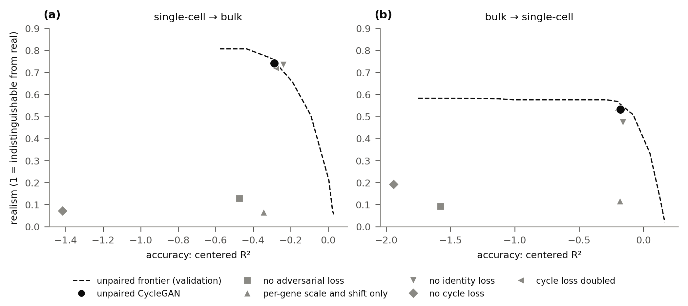
What did not work: changes to the unpaired CycleGANNone of five changes moved the CycleGAN clearly beyond the frontier
None of five changes moved the unpaired CycleGAN clearly beyond the frontier: removing the identity loss in one or both directions, an identity loss pulling toward the per-gene correction, a loss preserving distances between samples, and a bottleneck generator (Figure 16). The most promising change, removing the identity loss, gained 0.01 in mean margin on three fresh seeds, smaller than the seed-to-seed spread of 0.03.
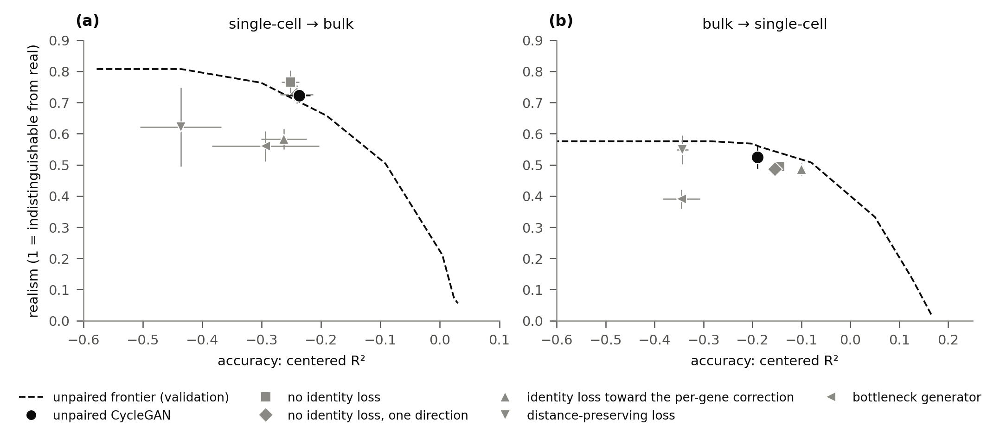
Robustness of the verdictOther classifiers and checkpoint choice left the verdict in place, and a second division of donors moved the margins
- Other classifiers. With a 50-component logistic classifier or gradient-boosted trees in place of the realism classifier, the locked CycleGAN's margin stayed near or below 0 when predicting either assay, though both classifiers partly detect differences between donors.
- A second split of the training donors. Trained on a second division of the training donors into unpaired halves, the CycleGAN's validation margins ranged from −0.02 to 0.20 when predicting bulk and from −0.42 to −0.19 when predicting single-cell profiles, across three seeds. test Its test margins on that division were and (point estimates), against and on the first.
- Checkpoint choice. test Generator weights averaged over training, which involve no checkpoint choice, moved from validation to test as the chosen checkpoints did, so the drop on test when predicting single-cell profiles does not come from a lucky checkpoint.
- The comparison as first planned. test Under the comparison as originally planned, before the documented change after the pilot, the verdict on test was the same.
Checks on the pipelineKnown answers were recovered, a negative control failed, and the CycleGAN hid no information
- Known answers were recovered. On simulated data where the true mapping between the assays is a per-gene scale and shift, the CycleGAN at the size and training length used on real data recovered it somewhat less well than ComBat (accuracy 0.85 against 0.96).
- Mixing genes favors the CycleGAN. With a smaller network, the CycleGAN nearly matched ComBat on the per-gene mapping (0.94), and when the mapping also mixed genes it recovered much more than ComBat (0.45 against 0.08).
- The realism measure's noise level. When real partners were relabeled at random within pairs, the realism classifier's AUROC averaged 0.50 and varied by 0.04 (one standard deviation), so realism differences between two models of up to about 0.2 can arise by chance.
- A negative control failed as it should. With the discriminator's real and predicted labels shuffled, realism fell below 0.01 when predicting bulk and 0.05 when predicting single-cell profiles, and accuracy collapsed.
- No hidden information. A CycleGAN can satisfy its cycle loss by hiding the input in imperceptible signals (Chu et al., 2017). In this project, the cycle error responded to small input noise as much as it did for the untrained per-gene correction (sensitivity ratio 0.95 to 1.01), so the CycleGAN was not hiding information this way.
Test access and reproducibilityOne scoring run on test, with audited code
- One scoring run. The test split was scored once, by code fixed and audited beforehand. A second run that changed only the display reproduced every result file, and both runs are recorded in a run log. The biological readouts in Findings 4–7 never used the test split, and the few test numbers in those findings come from the one scoring run.
- Determinism. Training is deterministic on CPU, and raw inputs are checked against pinned checksums.
- Every number checked. Every number on this page was checked against the result files.
All test results
Every comparison, with intervals and readings
| Direction | Comparison | Estimate | 95% CI | Reading |
|---|
Every model and measure (sortable)
| Direction | Model | Centered R² | Realism | Margin | Margin kind | Composition R² | Within-donor top-1 | Nearest-neighbor ratio |
|---|
Point estimates. The chosen checkpoint is the one chosen on validation. Averaged weights are exponential-moving-average weights, with no checkpoint selection. The margin is the distance beyond the unpaired frontier, in realism units (realism kind), or in centered-R² units when no blend is as accurate (accuracy kind). Mixed means members of different kinds were averaged. † For models averaged over several runs, the margin kind is inferred from their average accuracy. * Paired models' margins are descriptive. Composition R² is read from marker genes. Within-donor top-1 is the share of samples whose prediction is closest to its own partner among the donor's draws. The nearest-neighbor ratio is the distance to the nearest training target relative to that of real targets (0 for methods that output training profiles).
Interval plot of every comparison (Figure 17)
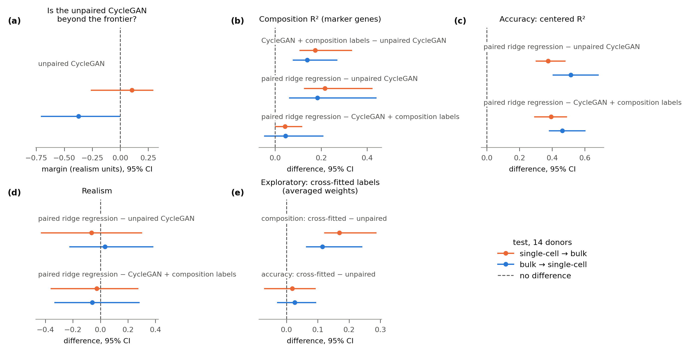
Result files
The result files behind these tables, one row per comparison or model. In the file names, h1, h2, and h3 are the three machine-learning questions (Findings 1–3), and bcf is the cross-fitted composition labels.
models_test.csv: every model and reference, every measureh1_test.csv: the unpaired CycleGAN against the frontierh2_test.csv: composition labelsh3_test.csv: what pairs addpairs_buy_test.csv: accuracy, realism, and composition by number of paired donorsreferences_test.csv: the random real profile, optimal-transport retrieval, and another draw of the same donorh1_within_donor_test.csv: picking out the own sample among a donor's drawsbcf_test.csv: cross-fitted composition labels
The full folder, with the validation results, is results/.
Definitions
The data
- Single-cell RNA-seq measures gene expression in individual cells. In this project, the cells are PBMCs (peripheral blood mononuclear cells: the lymphocytes, monocytes, and dendritic cells of blood). For each sample we sum up to 3,000 cells into one pseudobulk profile.
- PBMCs: peripheral blood mononuclear cells, the lymphocytes, monocytes, and dendritic cells of blood, separated from granulocytes and red cells by density before profiling.
- Bulk RNA-seq measures a whole tissue sample at once. Whole-blood bulk also includes granulocytes, which PBMC preparations remove, so the two assays differ in what they contain as well as in how they measure expression.
- Profile: expression values over the same 5,000 genes, the most variable ones chosen on training donors. Both assays use the same normalization, log(1 + counts per 10,000), so profiles are comparable.
- Cohort: 96 healthy adults (Gong et al., 2025), 49 young (25–37 years) and 47 older (55–67). Sex and cytomegalovirus status were recorded but not modeled. The data are public from the Allen Institute for Immunology's Sound Life study (doi:10.57785/bn17-3h16, CC BY 4.0), and the repository's scripts rebuild every input from the portal files.
- Donor, draw, sample: each donor gave several blood draws, or visits, over about two years, around yearly flu vaccination (median 10). Each draw is one sample. Every split keeps all of a donor's draws together and is stratified by age group.
- Pair: the single-cell and bulk profiles of the same blood sample. Unpaired training uses two collections with no pairing between them, in this project from different donors.
- Splits: training, validation (used to choose settings and checkpoints), and test (scored once at the end).
The models
- Cross-assay prediction: predicting a sample's expression profile in one assay from its profile in the other, in either direction.
- GAN: a generator produces outputs and a discriminator learns to tell them from real data. The generator is rewarded when the discriminator mistakes its outputs for real (Goodfellow et al., 2014).
- CycleGAN (Zhu et al., 2017): two generators, one per direction, trained on unpaired collections, with a cycle-consistency loss (mapping a profile to the other assay and back returns the input) and an identity loss (a profile already in the target assay is left unchanged). Our generators build on the per-gene correction and learn a correction to it, with two hidden layers of 512 units. The generators trained for 20,000 steps, and the settings and checkpoints were locked on validation.
- Training details:
- Generator: a residual network with a learnable per-gene scale and two hidden layers of 512 units, initialized exactly at the per-gene correction.
- Discriminator: a network with layers of 256 and 64 units and spectral normalization (Miyato et al., 2018), with input noise (Sønderby et al., 2017) annealed over the first half of training.
- Losses: a least-squares adversarial loss (Mao et al., 2017), an L1 cycle-consistency loss, and an optional identity loss. With composition labels, a composition loss ramped in after 20% of training.
- Optimization: Adam (Kingma and Ba, 2015; learning rate 2 × 10⁻⁴), batches of 64, 20,000 steps, deterministic on CPU.
- Settings searched on validation: 12 settings × 3 seeds for the unpaired CycleGAN (cycle weight, discriminator learning rate, identity loss) and 9 × 3 with composition labels. The checkpoint with the largest validation margin was locked.
- CycleGAN + composition labels: the same, plus a loss asking each prediction to keep its sample's cell-type fractions, as read by composition networks trained on pairs. In the exploratory cross-fitted variant, each label comes from a network that never saw that sample's donor.
- Paired ridge regression: a linear regression fit on all training pairs, whose penalty pulls predictions toward the average profile. The outputs are then spread out from the average by a factor chosen on the training donors, trading a little accuracy for a lot of realism. It is the reference that uses the most paired data. Plain ridge regression (without the spread step) is the same regression without that final spreading, so its predictions stay near the average profile.
- Per-gene correction: the simple alignment each CycleGAN builds on and learns a correction to. It is mean shift for single-cell → bulk and ComBat for bulk → single-cell, the most accurate alignment in each direction.
- Simple unpaired alignments, each matching one more level of the distributions without pairs:
- Mean shift matches per-gene means. It is the simplest correction, and a strong one for these data, since the gap between the assays lies mostly along one direction.
- ComBat (Johnson et al., 2007) also matches per-gene variances and is a widely used batch-effect correction in genomics. The assay difference is only partly a batch effect, though, since whole blood contains cells PBMCs lack.
- CORAL (Sun et al., 2016) also matches correlations between genes and is a standard unpaired domain-adaptation method in machine learning.
- Chosen checkpoint, averaged weights: the saved model state picked on validation, or a running average of the weights over training, which needs no choice (Yazıcı et al., 2019).
The measures
- Accuracy (centered R²): closeness to the sample's true partner over all genes, computed per sample and summarized by the median over samples. 1 is perfect, 0 is no better than predicting the average training profile, and it can be negative. The training-mean method averages only the unpaired training half, so it scores slightly below 0.
- Realism: a logistic regression on the top 10 principal components and their squares, cross-validated by donor, is trained to tell predictions from their true partners, a classifier two-sample test (Lopez-Paz and Oquab, 2017). Its AUROC, the chance that it scores a random prediction as more prediction-like than a random real profile, is 0.5 at chance and 1 when it separates them perfectly. Realism is 1 − 2|AUROC − 0.5|: 1 means indistinguishable. It asks whether the outputs would pass as a real cohort on the main axes of variation, not whether they are biologically plausible.
- Composition: the fractions of six cell types among a sample's PBMCs, which are T cells, monocytes, B cells, NK cells, dendritic cells, and \"other\" (residual platelets, red cells, progenitors, and innate lymphoid cells). They are counted from each sample's cells, and nothing in the data measures granulocyte abundance. A good prediction keeps its sample's composition.
- Marker genes are genes expressed mainly in one cell type, for example CD14 and LYZ in monocytes, MS4A1 in B cells, and NKG7 in NK cells, so their levels track how much of that cell type a sample holds.
- The marker-gene readout is a ridge regression, fit on each assay's real training profiles, that estimates the six fractions from 28 such genes. Composition R² is how well the fractions it reads from a predicted profile match the sample's true fractions.
- The CycleGAN never trains against this readout, so, unlike the composition networks in its loss, the readout is hard for the generator to exploit.
- Unpaired accuracy–realism frontier, blends, and margin: blends mix the predictions of two simple methods (the three alignments or the training mean) at a weight from 0 to 1. The frontier is the highest realism that any blend reaches at a given accuracy or better. A model's margin is its realism minus the frontier's at the model's accuracy, or, when the model is more accurate than every blend, its accuracy lead (see How realism is judged).
- Principal components: the directions along which profiles vary most. The top few summarize the main differences between samples.
- Within-donor top-1: the share of samples whose prediction is closer to its own partner than to that donor's other draws. It asks whether a prediction carries information about the sample, not just the person. Chance is about 1 in 8.
- 95% CI: from 1,000 resamples of the donors (donors, not draws, since a donor's draws are not independent). "No clear difference" means the interval includes the reference value, and "clearly" means the interval excludes that value.
- Random real profile: a real training profile drawn at random for each input. It is made of real profiles, though from different donors than the test set, and carries no information about the input.
- Another draw of the same donor: for each scored sample, the same donor's real profile from a different blood draw, which is real and from the right person but not the right day.
- Paired neural network: a small multilayer network fit on all training pairs, a second paired reference.
- Optimal-transport retrieval: a non-adversarial unpaired method that matches each input to training profiles of the other assay with Sinkhorn optimal transport (Cuturi, 2013) and returns one of those profiles.
The biological readouts
- Plasmablasts: short-lived, antibody-secreting B cells that surge in the blood about a week after vaccination (Wrammert et al., 2008; Nakaya et al., 2011).
- Granulocytes and neutrophils: granulocytes are white blood cells with granules, mostly neutrophils, which make up over half of blood's white cells and are removed when PBMCs are isolated.
- Interferon response: genes switched on by interferons, signaling proteins released during viral infection and some vaccine responses, peaking within a day or two.
- HLA: the human leukocyte antigen genes, which present antigens to T cells and differ greatly between people, so their expression is a stable signature of the person. Measured levels partly reflect which alleles a donor carries, since reads from some alleles map poorly to the reference genome.
- CMV: cytomegalovirus, a common lifelong herpesvirus infection that expands cytotoxic NK and T cells, leaving a lasting expression signature.
- Deconvolution: estimating cell-type fractions in a bulk profile by modeling it as a mix of reference profiles for each cell type (Abbas et al., 2009; Newman et al., 2015). Newer methods take those reference profiles from single cells (Newman et al., 2019; Chu et al., 2022).
- Gene program: a fixed set of genes that rise and fall together for a known reason, such as the markers of one cell type, the genes interferon induces, or the immunoglobulin genes of antibody-secreting plasmablasts. A sample's score is the mean of its genes, each standardized with the mean and SD of the training samples of the same assay. The Hallmark gene sets (Liberzon et al., 2015) are a supplementary check.
- Person-level and visit-level: a program is person-level when half or more of its variance lies between donors in the training data (the intraclass correlation, the share of variance between donors), and visit-level otherwise.
- Between-donor (baseline) and within-donor (visit-deviation) correlation: tracking split into two parts. The first is computed on donors' baselines, their mean scores: does the prediction rank people correctly? The second is computed on visit deviations, after removing each donor's mean: does it follow one person's visits?
- Tracked: the lower end of the 95% CI of the correlation between predicted and true program scores lies above the 97.5th percentile for 200 random real profiles, the value they exceed only 2.5% of the time. A CycleGAN's tracking is inherited when the per-gene correction tracks the program and the CycleGAN's correlation shows no clear difference from it (the 95% CI of Δr, the change in correlation from the per-gene correction, includes 0). The random-profile level is the chance level.
- Donor-year: the Day 0 and Day 7 draws of one donor's flu-vaccine year. The vaccine readout compares predicted and true Day 7 − Day 0 changes across donor-years. A program is scored only where its Day 7 change is present in both the training and the true validation profiles.
- Partial correlation of the change from the per-gene correction: per gene, the correlation of a method's change from the per-gene correction with the true partner, after both are adjusted for the correction. It is zero for any change that is a fixed function of the correction, so it asks whether the change carries information about the specific sample.
Code and report
Source code, notebooks (one per phase), and every result table are in the project repository: code, notebooks, results, report sources. The repository's README explains how the code is organized and how to rerun every phase.
Contributions and use of AI
Arushi Sahai (the author) conceived the project, chose the Sound Life cohort and the question, and wrote the proposal with Claude's help on drafting, editing, and a design sketch. The preprocessing builds on code the author wrote for an earlier project, including the slim data files and several data checks. The author set each phase's goals and decision rules, revising or approving the ones Claude proposed, and chose the ablations and exploratory directions together with Claude. Claude drafted the phase specs from those goals, and the author revised and approved them. The author also interpreted the results, directed and revised the text of the results page, README, and notebooks, and reviewed the analysis code and its tests before Claude ran them. The author's main contributions were the question, the unpaired design, the person, draw, and assay framing of blood signal, and identifying why a random real profile passes the realism test.
Claude (Anthropic), through Claude Code, wrote all of the new code under the author's direction and ran and monitored the training and evaluation runs. Claude also drafted text for the author to revise, helped interpret the ablation results, and ran code and results audits, one of which changed a decision rule before the main training runs. The AI-use log records what was assisted in each session and how it was checked.
The author's main contributions
- The question and the setup. Asking whether a generative model trained without pairs can recover sample-level biology. The submitted proposal trained a composition-aware CycleGAN on the matched pairs. In discussion with Claude, the author recast the project around training without pairs, since with pairs available a regression model is the natural competitor. The author designed the unpaired setup: the training donors are split into halves that share no person, and the pairs are never used to train the CycleGAN.
- The biological framing. Treating a blood transcriptome as three kinds of signal, each with its own readout. The person is read from donor baselines against visit deviations, the draw from the vaccine response, and the assay from granulocyte signal that only whole blood carries.
- The comparison. Choosing the comparison methods, starting from ComBat and CORAL in the proposal and adding the paired models that every result is measured against. Claude suggested adding mean shift and the training mean, and blending the alignments, so each model is judged against blends of them rather than each one alone. The author set the decision rules for judging the margin.
- Designing three ways to use paired data. Measuring how much paired data helps, and in what form:
- As composition labels. Networks trained on pairs read each sample's cell-type fractions, and the CycleGAN is trained to keep them.
- As labels from networks that never saw the sample's donor. These limit leakage from the pairs into the labels.
- As regression targets. Paired ridge regression is trained on the pairs.
- Pre-specified tests and a single test scoring. Requiring that the questions and decision rules be fixed before training, and that the test split be scored only once, by code the author reviewed and Claude audited, with a hash recording exactly which code that was.
References
All 33 references
- Abbas, A. R., Wolslegel, K., Seshasayee, D., Modrusan, Z. & Clark, H. F. Deconvolution of blood microarray data identifies cellular activation patterns in systemic lupus erythematosus. PLoS ONE 4, e6098 (2009). Paper
- Amodio, M. & Krishnaswamy, S. MAGAN: aligning biological manifolds. ICML, PMLR 80, 215–223 (2018). Paper
- Blau, Y. & Michaeli, T. The perception–distortion tradeoff. CVPR, 6228–6237 (2018). Paper
- Brown, C. J. et al. A gene from the region of the human X inactivation centre is expressed exclusively from the inactive X chromosome. Nature 349, 38–44 (1991). Paper
- Chu, C., Zhmoginov, A. & Sandler, M. CycleGAN, a master of steganography. arXiv:1712.02950 (2017). Paper
- Chu, T., Wang, Z., Pe'er, D. & Danko, C. G. Cell type and gene expression deconvolution with BayesPrism enables Bayesian integrative analysis across bulk and single-cell RNA sequencing in oncology. Nature Cancer 3, 505–517 (2022). Paper
- Cuturi, M. Sinkhorn distances: lightspeed computation of optimal transport. NeurIPS 26, 2292–2300 (2013). Paper
- De Bortoli, V., Thornton, J., Heng, J. & Doucet, A. Diffusion Schrödinger bridge with applications to score-based generative modeling. NeurIPS 34, 17695–17709 (2021). Paper
- Demetci, P., Santorella, R., Sandstede, B., Noble, W. S. & Singh, R. SCOT: single-cell multi-omics alignment with optimal transport. Journal of Computational Biology 29, 3–18 (2022). Paper
- Gong, Q., Sharma, M., Glass, M. C. et al. Multi-omic profiling reveals age-related immune dynamics in healthy adults. Nature 648, 696–706 (2025). Paper
- Goodfellow, I. et al. Generative adversarial nets. NeurIPS 27, 2672–2680 (2014). Paper
- Gumá, M., Angulo, A., Vilches, C., Gómez-Lozano, N., Malats, N. & López-Botet, M. Imprint of human cytomegalovirus infection on the NK cell receptor repertoire. Blood 104, 3664–3671 (2004). Paper
- Ho, J., Jain, A. & Abbeel, P. Denoising diffusion probabilistic models. NeurIPS 33, 6840–6851 (2020). Paper
- Johnson, W. E., Li, C. & Rabinovic, A. Adjusting batch effects in microarray expression data using empirical Bayes methods. Biostatistics 8, 118–127 (2007). Paper
- Kingma, D. P. & Ba, J. Adam: a method for stochastic optimization. ICLR (2015). Paper
- Korsunsky, I. et al. Fast, sensitive and accurate integration of single-cell data with Harmony. Nature Methods 16, 1289–1296 (2019). Paper
- Liao, J. et al. De novo analysis of bulk RNA-seq data at spatially resolved single-cell resolution. Nature Communications 13, 6498 (2022). Paper
- Liberzon, A., Birger, C., Thorvaldsdóttir, H. et al. The Molecular Signatures Database (MSigDB) hallmark gene set collection. Cell Systems 1, 417–425 (2015). Paper
- Lipman, Y., Chen, R. T. Q., Ben-Hamu, H., Nickel, M. & Le, M. Flow matching for generative modeling. ICLR (2023). Paper
- Lopez-Paz, D. & Oquab, M. Revisiting classifier two-sample tests. ICLR (2017). Paper
- Luecken, M. D., Büttner, M., Chaichoompu, K. et al. Benchmarking atlas-level data integration in single-cell genomics. Nature Methods 19, 41–50 (2022). Paper
- Mao, X. et al. Least squares generative adversarial networks. ICCV, 2794–2802 (2017). Paper
- Miyato, T., Kataoka, T., Koyama, M. & Yoshida, Y. Spectral normalization for generative adversarial networks. ICLR (2018). Paper
- Nakaya, H. I. et al. Systems biology of vaccination for seasonal influenza in humans. Nature Immunology 12, 786–795 (2011). Paper
- Newman, A. M. et al. Robust enumeration of cell subsets from tissue expression profiles. Nature Methods 12, 453–457 (2015). Paper
- Newman, A. M. et al. Determining cell type abundance and expression from bulk tissues with digital cytometry. Nature Biotechnology 37, 773–782 (2019). Paper
- Obermoser, G. et al. Systems scale interactive exploration reveals quantitative and qualitative differences in response to influenza and pneumococcal vaccines. Immunity 38, 831–844 (2013). Paper
- Provost, F. & Fawcett, T. Robust classification for imprecise environments. Machine Learning 42, 203–231 (2001). Paper
- Sønderby, C. K., Caballero, J., Theis, L., Shi, W. & Huszár, F. Amortised MAP inference for image super-resolution. ICLR (2017). Paper
- Sun, B., Feng, J. & Saenko, K. Return of frustratingly easy domain adaptation. AAAI, 2058–2065 (2016). Paper
- Wrammert, J. et al. Rapid cloning of high-affinity human monoclonal antibodies against influenza virus. Nature 453, 667–671 (2008). Paper
- Yazıcı, Y. et al. The unusual effectiveness of averaging in GAN training. ICLR (2019). Paper
- Zhu, J.-Y., Park, T., Isola, P. & Efros, A. A. Unpaired image-to-image translation using cycle-consistent adversarial networks. ICCV, 2223–2232 (2017). Paper